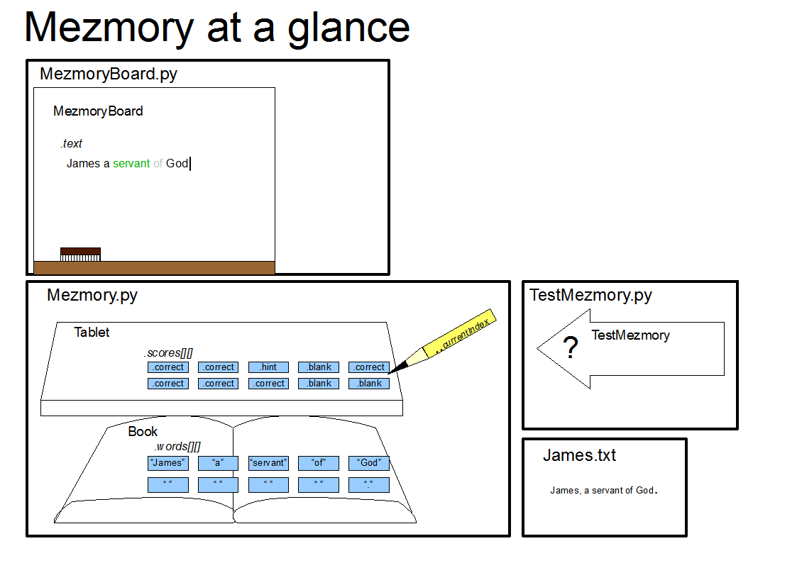

Since there is so little documentation, I am including all three parts in this one text file:
2) User's guide
Mezmory helps you to mezmorize long passages of any kind... memorize them I mean! The program will help you to see which parts you forget (or mispell). Don't focus on how good your memory is (or isn't!) focus on the meaning of the passage.
You need to install python from their website... www.python.org/download.
Once you have installed Python all you have to do is double-click MezmoryBoard.py to run my program... more details on that are below.
Mezmory should be simple to use:
Use any program you like to save the text you want to memorize as a plain text file (*.txt)
(Put the file in the same directory as MezmoryBoard.py)
Double-click MezmoryBoard.py to start up Mezmory.
A file dialog will appear. Type the name of your text file (complete with the *.txt) and your file will open.
Note: If Mezmory can't find your file it will open a small sample from James (“James (NIV).txt”) so you can see how it works. (You'll have to use the hint if you haven't memorized James.)
Try to type the passage that is in the file.
If you type it correclty it will simply appear in black
If you skip a word (that is you type a word that is a little bit ahead), the words you skip will appear grey
If you type a word that is grey, as long as it isn't too far back, then the word will turn blue and you can keep typing from there. (You can also keep typing form where you were, and it will jump back ahead again.)
If you need a hint, press “tab” - it will appear green
If you type a word that is wrong (or too far away), the word will simply dissappear. Thus what you see is always the correct text, without any mistakes in it. (It may colored a little funny, but it is exactly what you saved in your plain text file).
If you want to move forward or backwards a lot:
Tab = Forward one word (a hint)
Control-F = Forward a lot of words at once (say for example you want to go to chapter three... use this)
Shift-Delete = Backwards a lot of words at once (say for example you want to back up and try the last paragraph you just did because you made a lot of mistakes... a good way to learn)
Control-Delete = Backwards only one word at a time.
Note: Currently selecting and deleting text doesn't really do anything. The moment you start typing it will just go back wherever you were before.
Also Note: if you click back in the text somewhere the cursor will move, but it won't actually let you start typing there. It doesn't even know you clicked there and will continue as if you are still wherever you were typing last. Sorry.
First of all, as I have alreay said, focus on the meanign of the text. This is not all about your ability to remember the text word for word. Yes, the program will help you to do that, but that isn't what its about. It is about internalizing the text.
I typically don't use Mezmory until I have already mostly memorized a text. So far I've only been using it on texts that I (partially) memorized a long time ago and have forgotten bits and pieces of.
What I've done (and it has worked for me), is I say a phrase at a time out loud, and then write it. It is amazing how much more accurate it is when I've said the phrase aloud than if I just look and type. Of course it also helps me to think about what it means!
If I can't spell a word, or for any other reason a word won't appear, I just type the next word and keep on going.
If I miss a whole phrase, I'll usually type it (remember, you don't have to delete to type recently missed words, just type the first word (or two) and you'll immediately go back to the beginning of the phrase.
If all else fails I use the “hint”. Its not bad to use the hint.
At the end of a paragraph if it looks really colorful (a lot of grey and green, and maybe even if there is a lot of blue), then I read the whole paragraph aloud, noting especially the words that I missed. I ponder the difference between what I said and what is actually there so that I will remember the words next time. Sometimes I just say the bits that I missed five or six times aloud until it flows off my tongue (of course, as always thinking about what it means!).
Here's a subtle difference in meaning...
The actual text:
Eph 3:18 “...may have power, together with all the saints, to grasp how wide and long and high and deep is the love of Christ, 19and to know this love that surpasses knowledge - that you may be filled to the measure of all the fullness of God.”
What I tried to write:
“...may have power, together with all the saints, to grasp how wide and long and high and deep is the love of Christ, 19and that you may know this love...
Of course, the program never lets wrong words appear, so “that you may” dissappeared as I wrote them and the word “to” was skipped (appearing gray). When I thougth about the difference I realized that Paul was not just praying that they may know the love, but that they would have the power to know the love. Christ's love is so huge that it is by no means easy to know!
Usually if you want to jump back to a word you just type it. You can even skip a whole phrase if you forget it and jump forward by typing whatever comes after the phrase. However, in order to keep Mezmory from jumping all over like crazy, it won't jump more than 20 words at a time. (This is a single variable in the code that can be changed if you are so inclined).
Not only that, Mezmory looks at the whole passage and sees which words are the most common like “the” and “and”. For these common words you have to be really close to jump to them. So, if you've skipped the phrase “and find out what pleases the Lord”, you may not be able to jump back to the “and” by typing it, but if you type “find” it will jump back to the beginning of the phrase. It works the same way skipping forwards. If you forget a word or two, it won't jump as far for words like “and” and “the”.
Note: If you have a very short passage it may not be possible to skip words unless you go and change some numbers in the code.
For an introduction to Python, the tutorial that comes with Python (in the help) is very helpful.

The documentation pages linked below are generated by running pydoc Mezmory.bat
For an overview of the code:
Includes two classes:
* Book - basically a list of pairs of words and the whitespace between them
* Tablet - bascially a list of scores on how well the user is doing, and where the user is at the moment.
TestMezmory.py - A file to test the Mezmory.py code
Anytime I add a feature to Mezmory, I add a test here. That way if I ever break something, I'll immediately know it. Unfortunately, although this file starts MezmoryBoard for me, I can't actually use it to test MezmoryBoard! (Well, it would be possible, but I prefer just to test the GUI myself anyway.)
Includes a few classes:
* MezmoryBoard - The main GUI for Mezmory. Based on Tk.
See a separate PDF of tutorial and good reference for Tk (an-introduction-to-tkinter.pdf).
* Dialog - comes straight, unmodified from the Tk tutorial
* FileDialog - really basic inherited class of "Dialog"
I'll note that I've been using TortoiseSVN to keep track of when
I've made what changes to the documents. We could probably manage a
simple combination of e-mail and local Tortoise SVN if we both want
to keep tweaking the code. (TortoiseSVN is great for developing,
especially when shared by multiple people! Easy to use too. Perhaps
Josiah will help me to set up an SVN server if he thinks it is worth
it.)